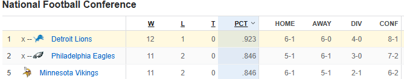

Lions eye 1 seed with 4 games left
Importance
The Lions have never been a 1 seed in the Super Bowl Era. The 1 seed has made the Superbowl 50% of the time since the beginning of the 1990 season. The benefit to having the 1 seed is that the team has homefield advantage in the conference championship and divisional rounds along with a bye through the wildcard round.
Finishing 4-0
TThe easiest way for the Lions to get the 1 seed is to simply win out. This would be hard for the Lions though was they must still play the 2 loss Vikings and 3 loss Bills at home where they'll only be slight favorites in both games. It doesn't help that both teams are among the top 10 scoring offense in the NFL as the Lions are heavily injured on defense. They have 12 players on injured reserve on defense, which is the most in the NFL.
Finishing 3-1
The Lions losing a game is a lot more probable than going undefeated. This would still get them the 1-seed as they would need Philly or Minnesota to win out to tie them. With tiebreakers the Lions would beat the Vikings due to having a better record among common opponents due to the Vikings loss to the Rams. Since the Lions have had a stronger schedule, they would have a better strength of victory than the Eagles.
Finishing 2-2
If the Lions were to finish 2-2, they would need the Eagles and the Vikings to lose a game to even have a chance at the 1 seed. It would be tough if both losses were in the conference because the second tiebreaker is win-lost-tie percentage within the conference, so to have any chance the Lions 2nd loss would have to be to the Bills since they are in the AFC. Any worse finish than 2-2 and it is extremely unlikely the Lions will get the 1 seed.